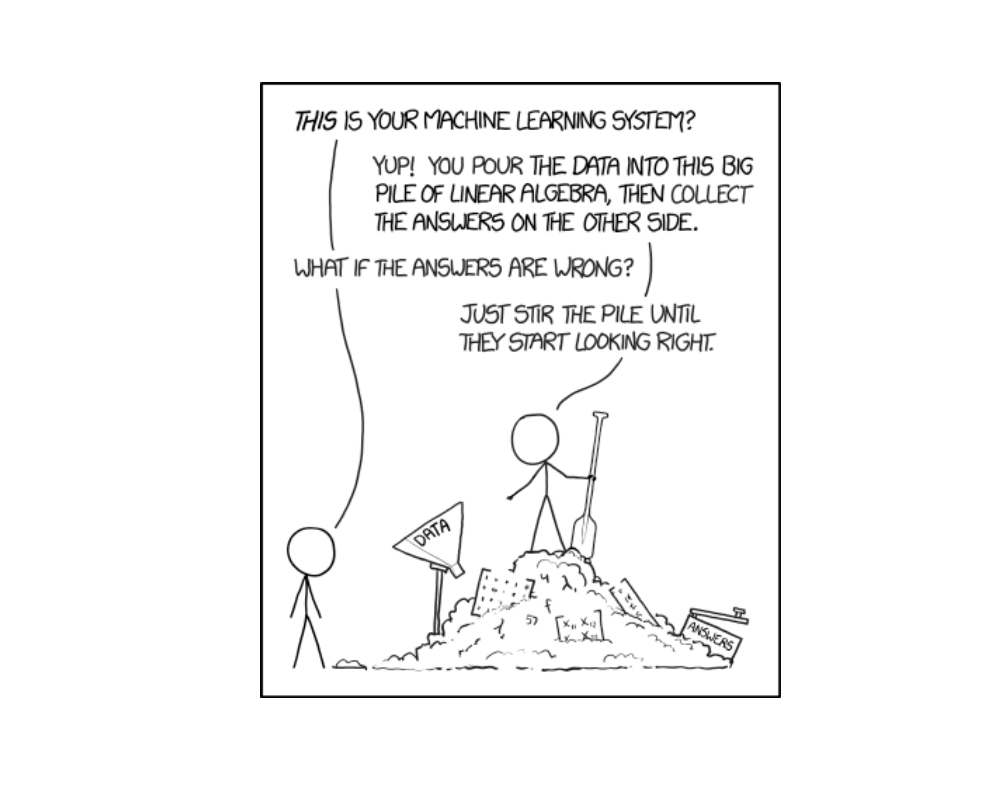

Lesson 5: Exploratory Data Analysis Lab
Today: EDA Lab
Objectives
- Execute EDA using appropriate graphs and summaries
- Justify choices of displays for variable types
- Communicate findings with clear, concise annotations
Go To Vantage
ImportantVantage
Let’s go to Vantage and work on our Exploratory Data Analysis.
WarningBackup Option
If Vantage isn’t working for you, use Google Colab instead.
EDA Assignment - Due Lesson 9
You have the rest of class to work on your Exploratory Data Analysis assignment.
Getting Help
If you get stuck:
- Ask your neighbor
- Ask your neighbor
- Raise your hand - I’m here to help!
Lesson 4 Review
Measures of Variability
Last lesson we learned how to quantify spread:
| Measure | Formula | Resistant? | Best For |
|---|---|---|---|
| Range | Max - Min | No | Quick summary |
| IQR | \(Q_3 - Q_1\) | Yes | Skewed data/outliers |
| Variance | \(s^2 = \frac{\sum(x_i-\bar{x})^2}{n-1}\) | No | Statistical inference |
| Std Dev | \(s = \sqrt{s^2}\) | No | General purpose |
TipKey Insight from Lesson 4
Report IQR with the median (for skewed data or outliers). Report standard deviation with the mean (for symmetric data).
Before You Leave
Today
- Lab day to work on Exploratory Data Analysis
- Apply everything from Lessons 1-4
Any questions?
Next Lesson
- Sample spaces and events
- Basic probability rules
- Complement and addition rules
Upcoming Graded Events
- WebAssign 1.4 - Due before Lesson 6
- Exploratory Data Analysis - Due Lesson 9
- WPR I - Lesson 16